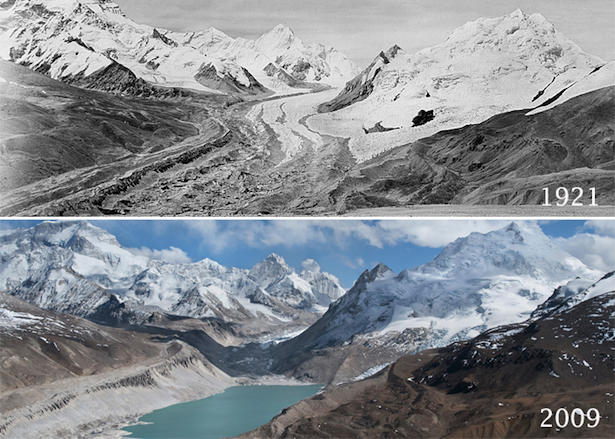

Ayo Pahami Perubahan Iklim!
Perubahan iklim adalah perubahan jangka panjang pada suhu dan pola cuaca di Bumi.
Perubahan ini bisa terjadi secara alami, misalnya karena aktivitas matahari atau letusan gunung berapi besar.
Namun sejak tahun 1800an, Aktivitas Manusia menjadi penyebab utama perubahan iklim,
terutama dari pembakaran bahan bakar fosil seperti batu bara, minyak, dan gas.
Karena itu, tidak mengherankan bahwa perubahan iklim sudah menjadi masalah sejak abad ke-19.
Contohnya dapat dilihat pada gambar di sebelah kanan. suhu yang semakin meningkat menyebabkan salju dan es di gletser mencair.

Perbandingan Gletser: 1921 vs 2009